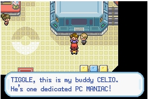
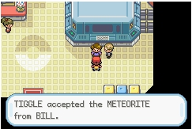
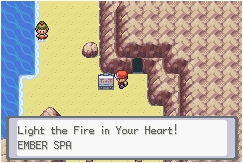
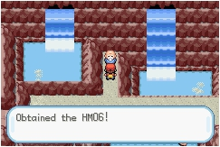
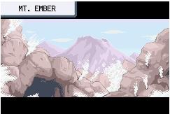
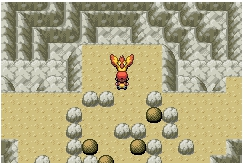
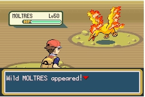

บทที่ 23 / 29
เกาะลับ1<One Island>
❖
เมื่อมาถึงเกาะ มาซากิจะพาเราเข้าโปเกมอนเซนเตอร์(ขนาดใหญ่) เพื่อไปหาเพื่อนของเขาที่ชื่อนิชิกิ<Celio> นิชิกิจะบอกว่าระบบส่งถ่ายโปเกมอนของเกาะลับยังไม่สามารถเชื่อมต่อกับระบบของมาซากิได้ มาซากิจึงฝาก หินอุกาบาต<Meteorite> ให้เราเอาไปให้เจ้าของ Game Corner ระหว่างรอซ่อมระบบ ที่เกาะลับ2 และ นิชิกิจะให้ Tri-Pass เป็นตั๋วเรือสำหรับเกาะ1-3


ให้เราเตรียมโปเกมอนในทีมที่สามารถใช้ท่าHM3, 4, 6ได้(HM6คือท่าทลายหิน ซึ่งส่วนมาก ตัวที่ใช้HM4ได้มักจะใช้ได้ด้วย) ว่ายน้ำขึ้นไปทางเหนือ จะเจอถ้ำบ่อน้ำพุร้อน<Ember Spa> เราสามารถฟื้นพลังโปเกมอนได้โดยการแช่น้ำ เข้าไปในถ้ำแล้วให้เราคุยกับ คนแก่ตรงมุมบนซ้าย จะได้HM06 Rock Smash ซึ่งเป็นท่าทำลายหิน


จากนั้นให้เราขึ้นไปทางเหนือต่อ เข้า Mt.Ember ทางซ้าย ตอนลึกสุดของเกาะด้านในจะพบโปเกมอนในตำนาน ไฟเยอร์ เลเวล50 <ดูรายละเอียดใน Part2> พอสู้หรือจับเสร็จแล้ว ให้เราขึ้นเรือไปยังเกาะลับ2


